规定初始像素覆盖已通过独立数据验收，完整12步与物理安全未通过。Prescribed initial pixel coverage passes the independent DATA audit; full12-step and physical acceptance remain incomplete. Original1280×720; no edits/crop. Every image below is INITIAL, not micro1/final.
{"seed": 2, "proposal_id": 2137, "global_id": 24665, "family": 1}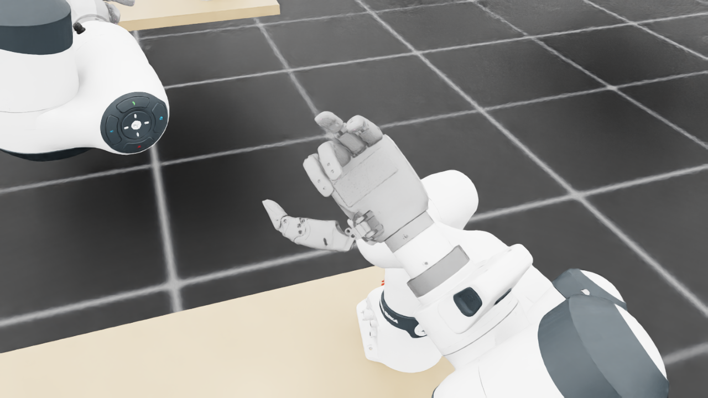
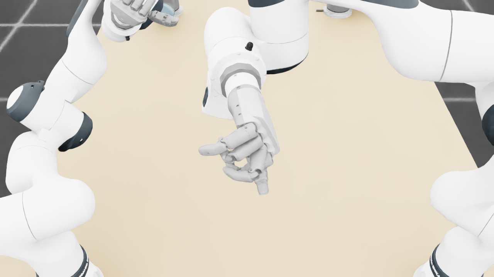
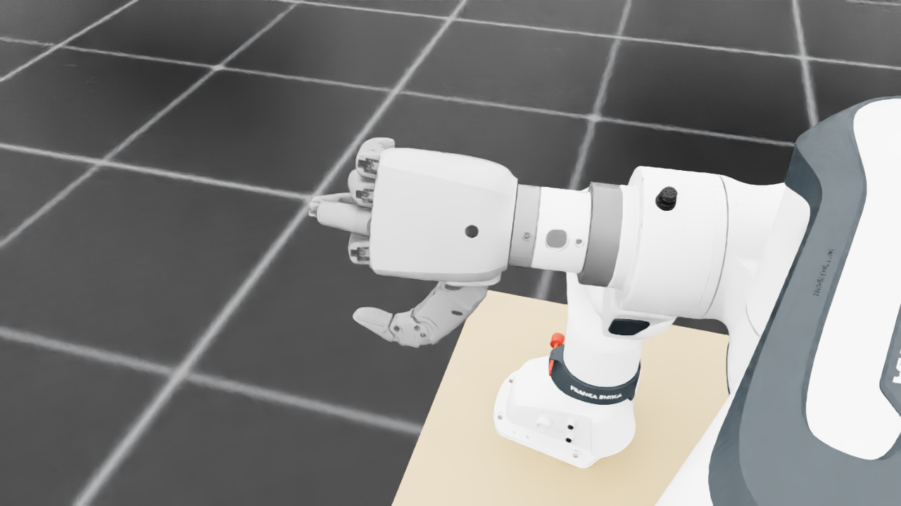
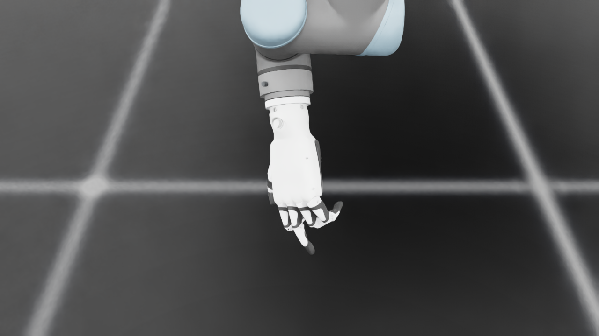
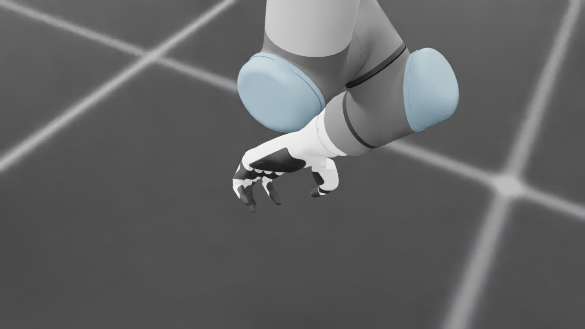
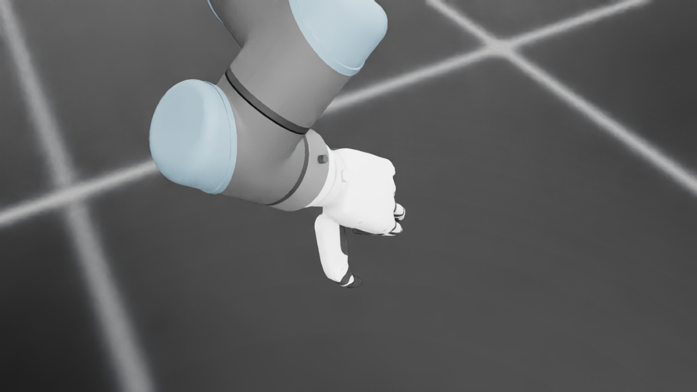
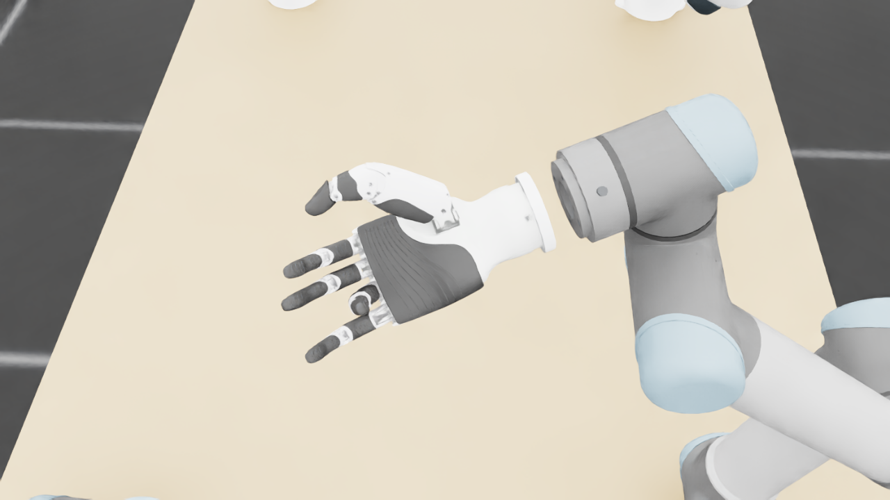
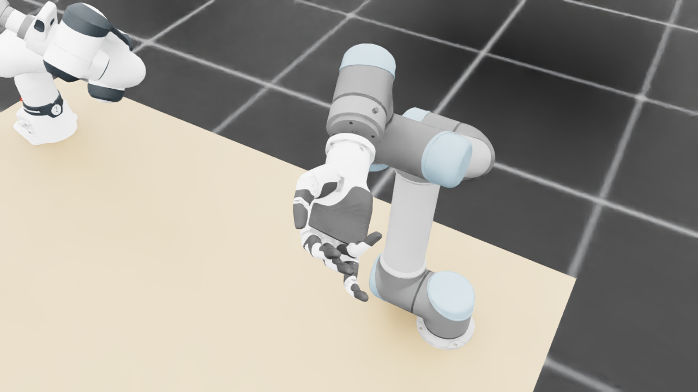
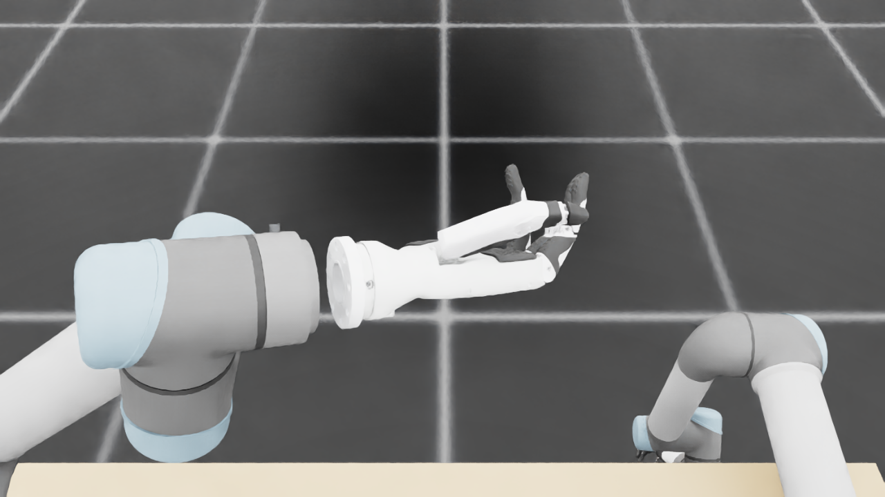
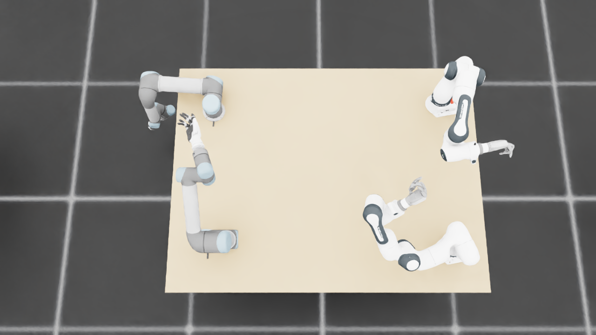
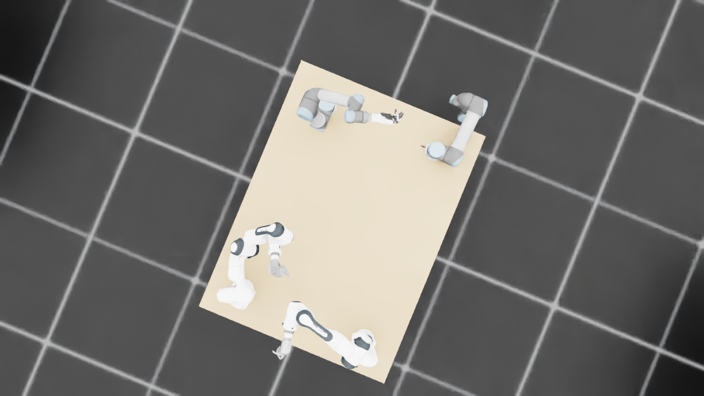
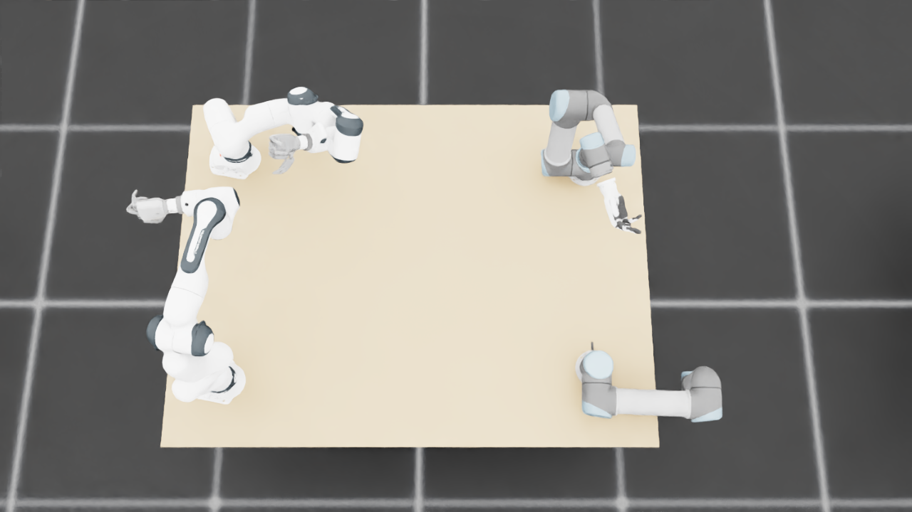
{
"qualified": true,
"arms": {
"F_L": {
"qualified": true,
"palm_visual_peak_pixels": 31348,
"finger_family_peak_pixels": {
"thumb": 8563,
"index": 4138,
"middle": 2885,
"ring": 2862,
"little": 2121
},
"per_native_body_peak_pixels": {
"/World/envs/env_18/F_L/f2_hand/left_hand_base": 37449,
"/World/envs/env_18/F_L/f2_hand/left_index_1": 2521,
"/World/envs/env_18/F_L/f2_hand/left_middle_1": 1216,
"/World/envs/env_18/F_L/f2_hand/left_pinky_1": 1216,
"/World/envs/env_18/F_L/f2_hand/left_ring_1": 1703,
"/World/envs/env_18/F_L/f2_hand/left_thumb_1": 828,
"/World/envs/env_18/F_L/f2_hand/left_index_2": 2170,
"/World/envs/env_18/F_L/f2_hand/left_middle_2": 1940,
"/World/envs/env_18/F_L/f2_hand/left_pinky_2": 905,
"/World/envs/env_18/F_L/f2_hand/left_ring_2": 1435,
"/World/envs/env_18/F_L/f2_hand/left_thumb_2": 4729,
"/World/envs/env_18/F_L/f2_hand/left_thumb_3": 1957,
"/World/envs/env_18/F_L/f2_hand/left_thumb_4": 2136
},
"native_body_visibility_gaps": [],
"all_native_hand_bodies_observed": true,
"full_mesh_coverage_certified": false,
"all_recorded_attempt_peak": {
"qualified": false,
"palm_visual_peak_pixels": 31808,
"finger_family_peak_pixels": {
"thumb": 8563,
"index": 4138,
"middle": 2885,
"ring": 2862,
"little": 2121
},
"per_native_body_peak_pixels": {
"/World/envs/env_18/F_L/f2_hand/left_hand_base": 38440,
"/World/envs/env_18/F_L/f2_hand/left_index_1": 2521,
"/World/envs/env_18/F_L/f2_hand/left_middle_1": 1216,
"/World/envs/env_18/F_L/f2_hand/left_pinky_1": 1216,
"/World/envs/env_18/F_L/f2_hand/left_ring_1": 1703,
"/World/envs/env_18/F_L/f2_hand/left_thumb_1": 828,
"/World/envs/env_18/F_L/f2_hand/left_index_2": 2170,
"/World/envs/env_18/F_L/f2_hand/left_middle_2": 1940,
"/World/envs/env_18/F_L/f2_hand/left_pinky_2": 905,
"/World/envs/env_18/F_L/f2_hand/left_ring_2": 1435,
"/World/envs/env_18/F_L/f2_hand/left_thumb_2": 4729,
"/World/envs/env_18/F_L/f2_hand/left_thumb_3": 1957,
"/World/envs/env_18/F_L/f2_hand/left_thumb_4": 2136
},
"native_body_visibility_gaps": [],
"all_native_hand_bodies_observed": true,
"full_mesh_coverage_certified": false,
"qualification": false
},
"attempts": 4,
"decoded": 4
},
"F_R": {
"qualified": true,
"palm_visual_peak_pixels": 40295,
"finger_family_peak_pixels": {
"thumb": 9882,
"index": 3819,
"middle": 4981,
"ring": 3853,
"little": 5544
},
"per_native_body_peak_pixels": {
"/World/envs/env_18/F_R/f2_hand/right_hand_base": 48962,
"/World/envs/env_18/F_R/f2_hand/right_index_1": 1115,
"/World/envs/env_18/F_R/f2_hand/right_middle_1": 2857,
"/World/envs/env_18/F_R/f2_hand/right_pinky_1": 3512,
"/World/envs/env_18/F_R/f2_hand/right_ring_1": 2987,
"/World/envs/env_18/F_R/f2_hand/right_thumb_1": 787,
"/World/envs/env_18/F_R/f2_hand/right_index_2": 2704,
"/World/envs/env_18/F_R/f2_hand/right_middle_2": 2392,
"/World/envs/env_18/F_R/f2_hand/right_pinky_2": 2032,
"/World/envs/env_18/F_R/f2_hand/right_ring_2": 2653,
"/World/envs/env_18/F_R/f2_hand/right_thumb_2": 5126,
"/World/envs/env_18/F_R/f2_hand/right_thumb_3": 2323,
"/World/envs/env_18/F_R/f2_hand/right_thumb_4": 1832
},
"native_body_visibility_gaps": [],
"all_native_hand_bodies_observed": true,
"full_mesh_coverage_certified": false,
"all_recorded_attempt_peak": {
"qualified": false,
"palm_visual_peak_pixels": 40295,
"finger_family_peak_pixels": {
"thumb": 11660,
"index": 5379,
"middle": 4981,
"ring": 4153,
"little": 5544
},
"per_native_body_peak_pixels": {
"/World/envs/env_18/F_R/f2_hand/right_hand_base": 48962,
"/World/envs/env_18/F_R/f2_hand/right_index_1": 3144,
"/World/envs/env_18/F_R/f2_hand/right_middle_1": 2983,
"/World/envs/env_18/F_R/f2_hand/right_pinky_1": 3512,
"/World/envs/env_18/F_R/f2_hand/right_ring_1": 2987,
"/World/envs/env_18/F_R/f2_hand/right_thumb_1": 1124,
"/World/envs/env_18/F_R/f2_hand/right_index_2": 3174,
"/World/envs/env_18/F_R/f2_hand/right_middle_2": 2392,
"/World/envs/env_18/F_R/f2_hand/right_pinky_2": 2032,
"/World/envs/env_18/F_R/f2_hand/right_ring_2": 3425,
"/World/envs/env_18/F_R/f2_hand/right_thumb_2": 6084,
"/World/envs/env_18/F_R/f2_hand/right_thumb_3": 3196,
"/World/envs/env_18/F_R/f2_hand/right_thumb_4": 2713
},
"native_body_visibility_gaps": [],
"all_native_hand_bodies_observed": true,
"full_mesh_coverage_certified": false,
"qualification": false
},
"attempts": 7,
"decoded": 7
},
"U_L": {
"qualified": true,
"palm_visual_peak_pixels": 3980,
"finger_family_peak_pixels": {
"thumb": 6547,
"index": 1586,
"middle": 2447,
"ring": 1544,
"little": 2441
},
"per_native_body_peak_pixels": {
"/World/envs/env_18/U_L/wrist_3_link": 28465,
"/World/envs/env_18/U_L/left_index_1": 1003,
"/World/envs/env_18/U_L/left_little_1": 1624,
"/World/envs/env_18/U_L/left_middle_1": 1312,
"/World/envs/env_18/U_L/left_ring_1": 1285,
"/World/envs/env_18/U_L/left_thumb_1": 339,
"/World/envs/env_18/U_L/left_index_2": 1087,
"/World/envs/env_18/U_L/left_little_2": 1055,
"/World/envs/env_18/U_L/left_middle_2": 1135,
"/World/envs/env_18/U_L/left_ring_2": 831,
"/World/envs/env_18/U_L/left_thumb_2": 4798,
"/World/envs/env_18/U_L/left_thumb_3": 1213,
"/World/envs/env_18/U_L/left_thumb_4": 408
},
"native_body_visibility_gaps": [],
"all_native_hand_bodies_observed": true,
"full_mesh_coverage_certified": false,
"all_recorded_attempt_peak": {
"qualified": false,
"palm_visual_peak_pixels": 12328,
"finger_family_peak_pixels": {
"thumb": 7551,
"index": 3156,
"middle": 2860,
"ring": 1877,
"little": 2783
},
"per_native_body_peak_pixels": {
"/World/envs/env_18/U_L/wrist_3_link": 35182,
"/World/envs/env_18/U_L/left_index_1": 1993,
"/World/envs/env_18/U_L/left_little_1": 1744,
"/World/envs/env_18/U_L/left_middle_1": 1439,
"/World/envs/env_18/U_L/left_ring_1": 1285,
"/World/envs/env_18/U_L/left_thumb_1": 439,
"/World/envs/env_18/U_L/left_index_2": 1163,
"/World/envs/env_18/U_L/left_little_2": 1055,
"/World/envs/env_18/U_L/left_middle_2": 1453,
"/World/envs/env_18/U_L/left_ring_2": 930,
"/World/envs/env_18/U_L/left_thumb_2": 4798,
"/World/envs/env_18/U_L/left_thumb_3": 2062,
"/World/envs/env_18/U_L/left_thumb_4": 1070
},
"native_body_visibility_gaps": [],
"all_native_hand_bodies_observed": true,
"full_mesh_coverage_certified": false,
"qualification": false
},
"attempts": 12,
"decoded": 12
},
"U_R": {
"qualified": true,
"palm_visual_peak_pixels": 16346,
"finger_family_peak_pixels": {
"thumb": 11416,
"index": 3681,
"middle": 3200,
"ring": 2014,
"little": 3140
},
"per_native_body_peak_pixels": {
"/World/envs/env_18/U_R/wrist_3_link": 45100,
"/World/envs/env_18/U_R/right_index_1": 2473,
"/World/envs/env_18/U_R/right_little_1": 1805,
"/World/envs/env_18/U_R/right_middle_1": 1494,
"/World/envs/env_18/U_R/right_ring_1": 730,
"/World/envs/env_18/U_R/right_thumb_1": 353,
"/World/envs/env_18/U_R/right_index_2": 1386,
"/World/envs/env_18/U_R/right_little_2": 1335,
"/World/envs/env_18/U_R/right_middle_2": 1706,
"/World/envs/env_18/U_R/right_ring_2": 1284,
"/World/envs/env_18/U_R/right_thumb_2": 6669,
"/World/envs/env_18/U_R/right_thumb_3": 3046,
"/World/envs/env_18/U_R/right_thumb_4": 1348
},
"native_body_visibility_gaps": [],
"all_native_hand_bodies_observed": true,
"full_mesh_coverage_certified": false,
"all_recorded_attempt_peak": {
"qualified": false,
"palm_visual_peak_pixels": 16423,
"finger_family_peak_pixels": {
"thumb": 11948,
"index": 4586,
"middle": 3398,
"ring": 4661,
"little": 5457
},
"per_native_body_peak_pixels": {
"/World/envs/env_18/U_R/wrist_3_link": 52239,
"/World/envs/env_18/U_R/right_index_1": 2975,
"/World/envs/env_18/U_R/right_little_1": 3303,
"/World/envs/env_18/U_R/right_middle_1": 1797,
"/World/envs/env_18/U_R/right_ring_1": 2289,
"/World/envs/env_18/U_R/right_thumb_1": 667,
"/World/envs/env_18/U_R/right_index_2": 2071,
"/World/envs/env_18/U_R/right_little_2": 2154,
"/World/envs/env_18/U_R/right_middle_2": 2632,
"/World/envs/env_18/U_R/right_ring_2": 2372,
"/World/envs/env_18/U_R/right_thumb_2": 6958,
"/World/envs/env_18/U_R/right_thumb_3": 3377,
"/World/envs/env_18/U_R/right_thumb_4": 1545
},
"native_body_visibility_gaps": [],
"all_native_hand_bodies_observed": true,
"full_mesh_coverage_certified": false,
"qualification": false
},
"attempts": 8,
"decoded": 8
}
},
"wide": {
"qualified": true,
"per_native_object_peak_pixels": {
"/World/envs/env_18/F_L/fr3_link0": 2186,
"/World/envs/env_18/F_L/fr3_link1": 2295,
"/World/envs/env_18/F_L/fr3_link2": 4030,
"/World/envs/env_18/F_L/fr3_link3": 1676,
"/World/envs/env_18/F_L/fr3_link4": 3088,
"/World/envs/env_18/F_L/fr3_link5": 4068,
"/World/envs/env_18/F_L/fr3_link6": 1109,
"/World/envs/env_18/F_L/fr3_link7": 874,
"/World/envs/env_18/F_L/fr3_link8": 212,
"/World/envs/env_18/F_L/f2_hand/left_hand_base": 1227,
"/World/envs/env_18/F_L/f2_hand/left_index_1": 52,
"/World/envs/env_18/F_L/f2_hand/left_middle_1": 33,
"/World/envs/env_18/F_L/f2_hand/left_pinky_1": 124,
"/World/envs/env_18/F_L/f2_hand/left_ring_1": 52,
"/World/envs/env_18/F_L/f2_hand/left_thumb_1": 42,
"/World/envs/env_18/F_L/f2_hand/left_index_2": 108,
"/World/envs/env_18/F_L/f2_hand/left_middle_2": 109,
"/World/envs/env_18/F_L/f2_hand/left_pinky_2": 83,
"/World/envs/env_18/F_L/f2_hand/left_ring_2": 81,
"/World/envs/env_18/F_L/f2_hand/left_thumb_2": 196,
"/World/envs/env_18/F_L/f2_hand/left_thumb_3": 79,
"/World/envs/env_18/F_L/f2_hand/left_thumb_4": 74,
"/World/envs/env_18/F_R/fr3_link0": 2004,
"/World/envs/env_18/F_R/fr3_link1": 1931,
"/World/envs/env_18/F_R/fr3_link2": 1948,
"/World/envs/env_18/F_R/fr3_link3": 3224,
"/World/envs/env_18/F_R/fr3_link4": 4603,
"/World/envs/env_18/F_R/fr3_link5": 5345,
"/World/envs/env_18/F_R/fr3_link6": 2361,
"/World/envs/env_18/F_R/fr3_link7": 899,
"/World/envs/env_18/F_R/fr3_link8": 193,
"/World/envs/env_18/F_R/f2_hand/right_hand_base": 1429,
"/World/envs/env_18/F_R/f2_hand/right_index_1": 30,
"/World/envs/env_18/F_R/f2_hand/right_middle_1": 84,
"/World/envs/env_18/F_R/f2_hand/right_pinky_1": 130,
"/World/envs/env_18/F_R/f2_hand/right_ring_1": 23,
"/World/envs/env_18/F_R/f2_hand/right_thumb_1": 0,
"/World/envs/env_18/F_R/f2_hand/right_index_2": 56,
"/World/envs/env_18/F_R/f2_hand/right_middle_2": 53,
"/World/envs/env_18/F_R/f2_hand/right_pinky_2": 77,
"/World/envs/env_18/F_R/f2_hand/right_ring_2": 77,
"/World/envs/env_18/F_R/f2_hand/right_thumb_2": 49,
"/World/envs/env_18/F_R/f2_hand/right_thumb_3": 50,
"/World/envs/env_18/F_R/f2_hand/right_thumb_4": 38,
"/World/envs/env_18/U_L/base_link": 534,
"/World/envs/env_18/U_L/shoulder_link": 1931,
"/World/envs/env_18/U_L/upper_arm_link": 8210,
"/World/envs/env_18/U_L/forearm_link": 2454,
"/World/envs/env_18/U_L/wrist_1_link": 380,
"/World/envs/env_18/U_L/wrist_2_link": 592,
"/World/envs/env_18/U_L/wrist_3_link": 61,
"/World/envs/env_18/U_L/left_index_1": 0,
"/World/envs/env_18/U_L/left_little_1": 26,
"/World/envs/env_18/U_L/left_middle_1": 0,
"/World/envs/env_18/U_L/left_ring_1": 0,
"/World/envs/env_18/U_L/left_thumb_1": 0,
"/World/envs/env_18/U_L/left_index_2": 0,
"/World/envs/env_18/U_L/left_little_2": 32,
"/World/envs/env_18/U_L/left_middle_2": 0,
"/World/envs/env_18/U_L/left_ring_2": 15,
"/World/envs/env_18/U_L/left_thumb_2": 4,
"/World/envs/env_18/U_L/left_thumb_3": 1,
"/World/envs/env_18/U_L/left_thumb_4": 3,
"/World/envs/env_18/U_R/base_link": 284,
"/World/envs/env_18/U_R/shoulder_link": 644,
"/World/envs/env_18/U_R/upper_arm_link": 5413,
"/World/envs/env_18/U_R/forearm_link": 6194,
"/World/envs/env_18/U_R/wrist_1_link": 612,
"/World/envs/env_18/U_R/wrist_2_link": 1756,
"/World/envs/env_18/U_R/wrist_3_link": 1767,
"/World/envs/env_18/U_R/right_index_1": 83,
"/World/envs/env_18/U_R/right_little_1": 26,
"/World/envs/env_18/U_R/right_middle_1": 84,
"/World/envs/env_18/U_R/right_ring_1": 80,
"/World/envs/env_18/U_R/right_thumb_1": 11,
"/World/envs/env_18/U_R/right_index_2": 103,
"/World/envs/env_18/U_R/right_little_2": 59,
"/World/envs/env_18/U_R/right_middle_2": 107,
"/World/envs/env_18/U_R/right_ring_2": 89,
"/World/envs/env_18/U_R/right_thumb_2": 257,
"/World/envs/env_18/U_R/right_thumb_3": 99,
"/World/envs/env_18/U_R/right_thumb_4": 65,
"/World/envs/env_18/TableF": 125749,
"/World/envs/env_18/TableU": 140237
},
"arm_peak_pixels": {
"F_L": 19888,
"F_R": 23033,
"U_L": 12300,
"U_R": 14822
},
"table_peak_pixels": {
"TableF": 125749,
"TableU": 140237
},
"critical_body_peak_pixels": {
"/World/envs/env_18/U_L/forearm_link": 2454,
"/World/envs/env_18/U_L/wrist_2_link": 592,
"/World/envs/env_18/U_R/forearm_link": 6194,
"/World/envs/env_18/U_R/wrist_2_link": 1756
}
},
"raw_attempt_count": 43,
"PNG_count": 43,
"angle_records": 43,
"max_actual_angle_identity_error_deg": 0.0,
"held_snapshot_checks": 934,
"universal_visibility_impossible": false,
"full_mesh_coverage_certified": false
}